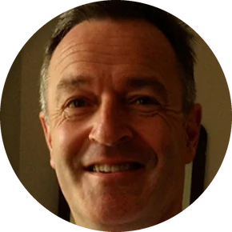
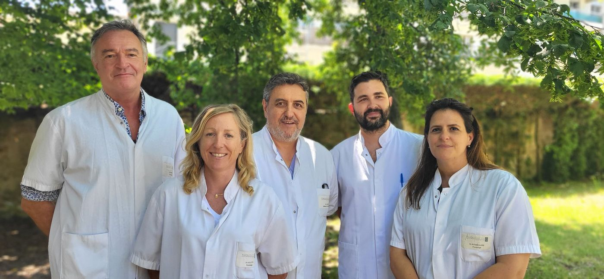

Dr Alain Castinel
Au cabinet depuis 1996Docteur en médecine et DES d'hépato-gastro-entérologie, faculté de médecine de Bordeaux.
Voir son parcoursProctologie médicale et chirurgicale · Le Bouscat, Bordeaux
Six proctologues, médecins et chirurgiens, reçoivent au Bouscat les patients adressés par leur médecin, et les opèrent à la clinique Tivoli-Ducos.
Ouvert maintenant · jusqu'à 18h30 159 boulevard Godard, Le Bouscat
Le cabinet reçoit uniquement les patients adressés par un médecin.
Avant de consulter
C'est votre médecin qui le détermine, après vous avoir examiné. Pour mieux comprendre ce que vous ressentez, ces courtes vidéos expliquent simplement les problèmes les plus fréquents.
Vidéos de la SFHGL (ex-CREGG), société des hépato-gastro-entérologues libéraux, avec la participation du Dr Frédéric Juguet. Elles vous informent, mais ne remplacent pas l'examen par un médecin. Les liens s'ouvrent dans un nouvel onglet.
Ce parcours permet de réguler les délais de rendez-vous, déjà longs.
Premier recours
Ou, à défaut, un médecin urgentiste. Il vous examine et juge si l'avis d'un proctologue est nécessaire.
Deuxième recours, si nécessaire
Votre médecin peut d'abord vous adresser à un gastro-entérologue, qui vous examine à son tour et vous oriente vers le cabinet si besoin.
Adressage
Par un courrier détaillé avec une demande motivée. Si besoin, il peut aussi nous écrire directement par messagerie sécurisée. Ne prenez pas rendez-vous de vous-même.
Comment se passe la prise de rendez-vous →Urgences
La notion d'urgence n'est pas la même pour le patient, pour le médecin de premier recours et pour le chirurgien proctologue.
L'équipe médicale
Des gastro-entérologues spécialisés dans les maladies de l'anus, du rectum et du périnée, formés à la proctologie médicale comme chirurgicale. Ils consultent au Bouscat et opèrent à la clinique Tivoli-Ducos.


Docteur en médecine et DES d'hépato-gastro-entérologie, faculté de médecine de Bordeaux.
Voir son parcoursDES de gastro-entérologie et hépatologie, DU de proctologie de Toulouse. Attaché au CHU de Bordeaux.
Voir son parcours
Docteur en médecine et DES d'hépato-gastro-entérologie, faculté de médecine de Nancy.
Voir son parcoursDocteur en médecine et DES d'hépato-gastro-entérologie, faculté de médecine de Bordeaux.
Voir son parcoursDocteur en médecine et DES d'hépato-gastro-entérologie, université de Bordeaux. Praticien hospitalier au CHU de Bordeaux (pôle ADEN).
Voir son parcours
Docteur en médecine et DES d'hépato-gastro-entérologie, université de Bordeaux. DIU de proctologie médico-chirurgicale, université Paris Cité.
Voir son parcoursLe parcours de chaque médecin, et l'histoire du cabinet depuis sa création.
L'équipe médicale → Notre histoire →Avant de venir
L'idée d'une première consultation chez le proctologue peut être déroutante, voire angoissante : la crainte d'avoir mal, d'être mis dans une position « humiliante », ou tout simplement d'exposer des choses intimes.
« Souvenez-vous que vous allez avoir affaire à un médecin spécialiste, qui voit chaque semaine de nombreux patients pour le même type de problème. »Préparer votre première consultation →
Honoraires
Les médecins du cabinet exercent en secteur 2, conventionné à honoraires libres, et pratiquent un complément d'honoraires pour maintenir la qualité des soins, du matériel et du suivi.
Nous restons à l'écoute et nous adaptons à toutes les situations : n'hésitez pas à nous faire part de vos difficultés personnelles.
Comprendre nos honoraires →Consultations
Pour une consultation de proctologie, vous devez obligatoirement être adressé(e) par un médecin, généraliste ou spécialiste.
Ne prenez pas rendez-vous de vous-même : parlez-en d'abord à votre médecin. C'est lui qui juge si une consultation est nécessaire et qui vous adresse au cabinet. Revoir le parcours de soins
Délai de rendez-vous
8 à 10 mois
pour un rendez-vous non urgent, en ligne comme par téléphone.
Si ce délai paraît trop long à votre médecin, en particulier en cas d'indication chirurgicale, il peut nous écrire par messagerie sécurisée MSSanté. Il trouvera nos coordonnées dans l'Annuaire Santé.
Annuaire Santé, pour votre médecinUne fois adressé(e) par votre médecin
De préférence en ligne, sur le site ou l'application Doctolib. Vous pourrez y obtenir un rendez-vous plus tôt en cas de désistement.
Réserver sur DoctolibSinon, par téléphone : 05 56 44 84 93. Attention, le standard est souvent saturé.
Informations complémentaires
Votre intervention
Vous allez être opéré(e) ? Tout ce qu'il faut lire avant, et transmettre après, est réuni sur une seule page.
Lisez les livrets pédagogiques du cabinet : leur parfaite maîtrise est impérative pour votre sécurité.
Votre intervention a lieu à la clinique Tivoli-Ducos, à Bordeaux.
Si des soins infirmiers vous ont été prescrits, remettez la fiche de liaison à votre infirmier(e).
Venir au cabinet

159 boulevard Godard
33110 Le Bouscat
Téléphone : 05 56 44 84 93
SOS Procto, conduites à tenir et messagerie sécurisée : un espace distinct, destiné aux médecins généralistes, urgentistes et spécialistes. Si le délai de rendez-vous paraît trop long pour votre patient, écrivez-nous par messagerie sécurisée MSSanté.